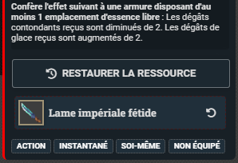
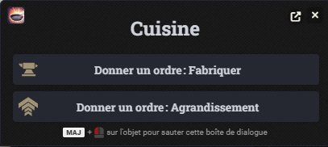
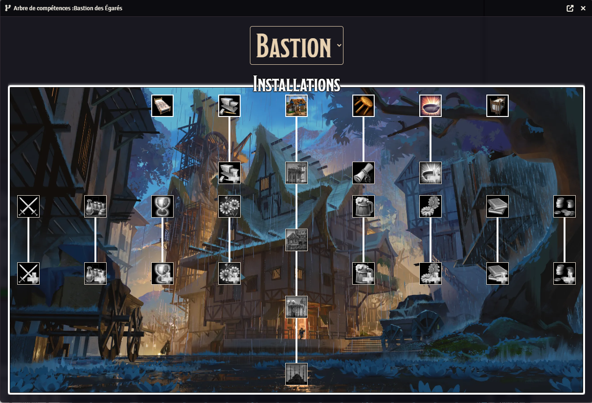

Artisanat
Le système d’artisanat a été refondu avec un nouveau module plus
souple, permettant des fonctionnalités étendues (crafts en plusieurs
étapes, échecs cumulés, etc.). Il est désormais accessible depuis un
onglet dédié dans la fiche de personnage.
Essences
Le système d’essences permet aux joueurs de personnaliser leur
équipement, offensivement et défensivement.
-

Préparation :
Assurez-vous que l'équipement que vous souhaitez enchanter
dispose d'au moins 1
emplacement d'essence vide.
-
Localiser l'essence dans l'inventaire :
Ouvrez la fiche de personnage et cliquez sur l’onglet
“Inventaire”, les essences possédées se
trouvent dans la catégorie “Consommables”.
-
Utiliser l'essence :
Utilisez l'essence comme vous utiliseriez un objet standard.
Vous devrez alors choisir entre enchanter une arme, ou une
armure. Le 3ème choix sur l'exemple correspond à l'aptitude
ajoutée à une arme enchantée, et ne doit pas être sélectionné.
-
Consommer l'essence :
Sélectionnez le type d'équipement que vous souhaitez enchanter.
Lorsque la fenêtre vous demandant si vous souhaitez consommer
une charge de l'objet apparaît, assurez-vous que la case soit
cochée, puis validez. Un message apparaîtra alors dans le tchat.
-
Enchantement :
Vous pouvez à présent faire glisser l'objet que vous souhaitez
enchanter vers l'emplacement prévu à cet effet dans le tchat.
-
Résultat :
L'équipement enchanté héritera alors des effets de l'essence
sélectionnée.

Bastion
Le système de Bastion permet aux joueurs de personnaliser leur lieu
de vie. Ils pourront ainsi bénéficier de divers bonus, et pourront
déléguer certaines tâches à leur recrues.
-
Le Bastion :
La fiche du Bastion se trouve dans la
barre latérale, dans le dossier du même nom.
Vous pouvez accéder à l'inventaire ainsi qu'aux installations du
Bastion de cette façon.
-
Les installations :
Sur la fiche du Bastion, cliquez sur l’onglet
“Bastion”. Les différentes installations du
Bastion y sont affichées.
-
Assigner une recrue :
Vous pouvez faire glisser une recrue depuis la barre latérale
vers une installation pour l'y assigner. Pour la retirer, passez
la fiche en mode édition et cliquez sur la croix sur l'icône
représentant la recrue.
-
Donner un ordre :
Cliquez sur le nom de l'installation pour afficher les ordres
disponibles. Le fonctionnement de chaque ordre sera expliqué par
les MJ lors de leur utilisation.

-
Arbre de compétences :
Vous pouvez afficher la liste des installations sous forme
d'arbre de compétences en cliquant sur le bouton
Arbre de
compétences
au sommet de la fiche du Bastion.

-
Note :
Assurez-vous d'ouvrir ce menu depuis la fiche du Bastion, et non
celle de votre personnage.